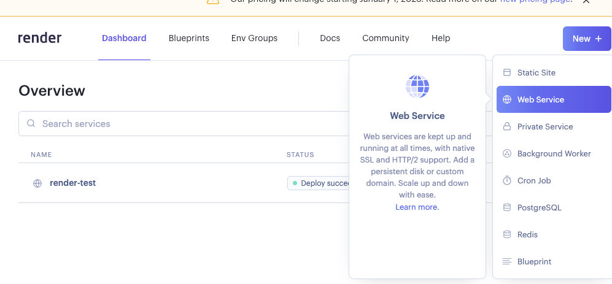
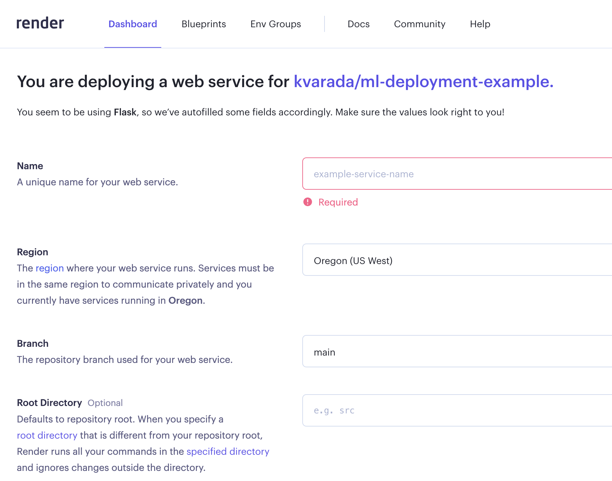

Lecture 24: Deployment and conclusion#
UBC 2022-23
Instructor: Varada Kolhatkar
Imports, LOs, Announcements#
Imports#
import pandas as pd
from sklearn.ensemble import RandomForestRegressor
from sklearn.feature_extraction.text import CountVectorizer
from sklearn.linear_model import LogisticRegression
from sklearn.metrics import mean_absolute_error
from sklearn.model_selection import cross_validate, train_test_split
from sklearn.pipeline import Pipeline, make_pipeline
Learning objectives#
Describe the goals and challenges of model deployment.
Announcements#
Last lecture today!
hw9 is due tomorrow 11:59pm
Sorry for the delay in getting back the grades for hw7 and hw8. The solutions are available in Canvas.
No tutorials this week.
Next Monday the usual morning TA office hours will be there.
I’ve scheduled extra OH. 2-hour slot in my office (ICCS 237) on Thursday between 11 to 1pm and a 1-hour Zoom slot on Monday between 4 to 5pm.
I’ll give you some time for formal course evaluations during today’s lecture.
Final exam#
Our final exam is on Dec. 15th at 7pm
We are split in two rooms: PHRM 1101 and PHRM 1201.
See the schedule here
Where are you supposed to go to write your exam?
There is alphabetical split.
ABR-MU: PHRM 1101: Anyone with a family name that begins with M or before would go to PHRM 1101
NGU-ZHU: PHRM 1201: Anyone with a family name that begins with N or after would go to PHRM 1201
An update on the internet in our exam rooms: I’ve checked with UBC IT about the internet connection in our exam rooms. We should be fine based on the following response.
Each of the large lecture theatres in the Pharmacy Building have capacity for 300 simultaneous client devices. The Wireless Access Points serving these rooms are 802.11ax (WIFI 6) capable and were upgraded in Summer 2022.
Cummulative
Open book. You can refer to the notes.
Please bring your computer and charger. All of it is going to be on Canvas.
A combination of: Multiple choice questions, short answer questions, simple coding questions
No communication/collaboration
No public Piazza posts
More details are posted on Piazza post @568.
Model deployment (~30 min)#
Try out this moment predictor#
https://render-test-xygn.onrender.com
In this lecture I will show you how to set up/develop this.
What is deployment?#
After we train a model, we want to use it!
The user likely does not want to install your Python stack, train your model.
You don’t necessarily want to share your dataset.
So we need to do two things:
Save/store your model for later use.
Make the saved model conveniently accessible.
Requirements (I already did these)#
render account. Register here.
More python installations:
pip install Flask
pip install Flask-WTF
pip install joblib
Demo: Deploying moment classification model#
Building a model#
Recall the multi-class classification problem using the HappyDB corpus.
df = pd.read_csv("data/cleaned_hm.csv", index_col=0)
sample_df = df.dropna()
sample_df.head()
sample_df = sample_df.rename(
columns={"cleaned_hm": "moment", "ground_truth_category": "target"}
)
sample_df.head()
---------------------------------------------------------------------------
FileNotFoundError Traceback (most recent call last)
Cell In[2], line 1
----> 1 df = pd.read_csv("data/cleaned_hm.csv", index_col=0)
2 sample_df = df.dropna()
3 sample_df.head()
File ~/miniconda3/envs/jbook/lib/python3.10/site-packages/pandas/util/_decorators.py:311, in deprecate_nonkeyword_arguments.<locals>.decorate.<locals>.wrapper(*args, **kwargs)
305 if len(args) > num_allow_args:
306 warnings.warn(
307 msg.format(arguments=arguments),
308 FutureWarning,
309 stacklevel=stacklevel,
310 )
--> 311 return func(*args, **kwargs)
File ~/miniconda3/envs/jbook/lib/python3.10/site-packages/pandas/io/parsers/readers.py:680, in read_csv(filepath_or_buffer, sep, delimiter, header, names, index_col, usecols, squeeze, prefix, mangle_dupe_cols, dtype, engine, converters, true_values, false_values, skipinitialspace, skiprows, skipfooter, nrows, na_values, keep_default_na, na_filter, verbose, skip_blank_lines, parse_dates, infer_datetime_format, keep_date_col, date_parser, dayfirst, cache_dates, iterator, chunksize, compression, thousands, decimal, lineterminator, quotechar, quoting, doublequote, escapechar, comment, encoding, encoding_errors, dialect, error_bad_lines, warn_bad_lines, on_bad_lines, delim_whitespace, low_memory, memory_map, float_precision, storage_options)
665 kwds_defaults = _refine_defaults_read(
666 dialect,
667 delimiter,
(...)
676 defaults={"delimiter": ","},
677 )
678 kwds.update(kwds_defaults)
--> 680 return _read(filepath_or_buffer, kwds)
File ~/miniconda3/envs/jbook/lib/python3.10/site-packages/pandas/io/parsers/readers.py:575, in _read(filepath_or_buffer, kwds)
572 _validate_names(kwds.get("names", None))
574 # Create the parser.
--> 575 parser = TextFileReader(filepath_or_buffer, **kwds)
577 if chunksize or iterator:
578 return parser
File ~/miniconda3/envs/jbook/lib/python3.10/site-packages/pandas/io/parsers/readers.py:933, in TextFileReader.__init__(self, f, engine, **kwds)
930 self.options["has_index_names"] = kwds["has_index_names"]
932 self.handles: IOHandles | None = None
--> 933 self._engine = self._make_engine(f, self.engine)
File ~/miniconda3/envs/jbook/lib/python3.10/site-packages/pandas/io/parsers/readers.py:1217, in TextFileReader._make_engine(self, f, engine)
1213 mode = "rb"
1214 # error: No overload variant of "get_handle" matches argument types
1215 # "Union[str, PathLike[str], ReadCsvBuffer[bytes], ReadCsvBuffer[str]]"
1216 # , "str", "bool", "Any", "Any", "Any", "Any", "Any"
-> 1217 self.handles = get_handle( # type: ignore[call-overload]
1218 f,
1219 mode,
1220 encoding=self.options.get("encoding", None),
1221 compression=self.options.get("compression", None),
1222 memory_map=self.options.get("memory_map", False),
1223 is_text=is_text,
1224 errors=self.options.get("encoding_errors", "strict"),
1225 storage_options=self.options.get("storage_options", None),
1226 )
1227 assert self.handles is not None
1228 f = self.handles.handle
File ~/miniconda3/envs/jbook/lib/python3.10/site-packages/pandas/io/common.py:789, in get_handle(path_or_buf, mode, encoding, compression, memory_map, is_text, errors, storage_options)
784 elif isinstance(handle, str):
785 # Check whether the filename is to be opened in binary mode.
786 # Binary mode does not support 'encoding' and 'newline'.
787 if ioargs.encoding and "b" not in ioargs.mode:
788 # Encoding
--> 789 handle = open(
790 handle,
791 ioargs.mode,
792 encoding=ioargs.encoding,
793 errors=errors,
794 newline="",
795 )
796 else:
797 # Binary mode
798 handle = open(handle, ioargs.mode)
FileNotFoundError: [Errno 2] No such file or directory: 'data/cleaned_hm.csv'
sample_df["target"].value_counts()
affection 4810
achievement 4276
bonding 1750
enjoy_the_moment 1514
leisure 1306
nature 252
exercise 217
Name: target, dtype: int64
It’s a multiclass classification problem!
train_df, test_df = train_test_split(sample_df, test_size=0.2, random_state=123)
X_train_happy, y_train_happy = train_df["moment"], train_df["target"]
X_test_happy, y_test_happy = test_df["moment"], test_df["target"]
pipe_lr = make_pipeline(
CountVectorizer(stop_words="english"),
LogisticRegression(max_iter=2000),
)
pipe_lr.fit(X_train_happy, y_train_happy);
pipe_lr.score(X_train_happy, y_train_happy)
0.9528318584070796
pipe_lr.score(X_test_happy, y_test_happy)
0.8169911504424778
Training on the full corpus#
Ideally, you’ll try all different models, fine tune the most promising models and deploy the best performing model.
Sometimes before deploying a model people train it on the full dataset.
This is probably a good idea, because more data is better.
It’s also a little scary, because we can’t test this new model.
Here I’m just deploying the model trained on the training set.
Saving the model#
If we want to deploy a model, we need to save it.
we are using
joblibfor that.
import joblib
with open("web_api/moment_predictor.joblib", "wb") as f:
joblib.dump(pipe_lr, f)
with open("web_application/moment_predictor.joblib", "wb") as f:
joblib.dump(pipe_lr, f)
We’ll define a function that accepts input data as a dictionary and returns a prediction:
Loading our saved model#
Let’s write a function to get predictions.
def return_prediction(model, text):
prediction = model.predict([text])[0]
return prediction
model = joblib.load("web_api/moment_predictor.joblib") # load the saved model
text = "I love my students!"
return_prediction(model, text)
'affection'
This function appears in the app.py that we’ll be using shortly.
(Optional) Setting up a directory structure and environment#
We need a specific directory structure to help us easily deploy our machine learning model.
This is already set up in this repo.
├── web_api
│ └── moment_predictor.joblib # this is the machine learning model we have built locally
│ └── app.py # the file that defines our flask API
│ └── Procfile # required to help start flask app
│ └── requirements.txt # file containing required packages
│
└── web_application
└── moment_predictor.joblib # this is the machine learning model we have built locally
└── app.py # the file that defines our flask API
└── Procfile # required to help start flask app
└── requirements.txt # file containing required packages
└── templates # contains HTML templates to help us build the web application
│ └── style.css # css template to be used in web application
└── static # this subdirectory contains CSS style sheets
└── home.html # html template to be used in web application
└── prediction.html # html template to be used in web application
Model deployment#
We have two options for deploying our moment prediction model. We can:
Build a web application (app) with a HTML user-interface that interacts directly with our model.
Develop a RESTful (REST stands for REpresentational State Transfer) web API that accepts HTTP requests in the form of input data and returns a prediction.
We’ll explore both options below.
Building and deploying a web app#
on localhost (my laptop) |
on server (the interwebs) |
|
|---|---|---|
app |
❓ |
|
API |
Flask can create entire web applications.
We need to link our code to some html and css to create our web application.
We will use Flask to create a html form, accept data submitted to the form, and return a prediction using the submitted data.
Again, I won’t go into too much detail here, but we can open up
web_application/and take a quick look.
If you want to learn more about Flask, see:
Let’s try
web_application/app.pythat handles this part.We can open it up here in Jupyter and take a look.
If we run
python app.pywe’ll bring it to life.
Web app on local server#
Go to the terminal.
Navigate to the
web_applicationdirectory.Run the following to make the app alive:
python app.py.If you get an error, you may need to install those extra packages and make sure you have the environment loaded.
Now you should be able to access the app at:
http://127.0.0.1:5000/orhttp://localhost:5000/.
Web app on a real server#
If you want people to use your app/model, you would probably want to put it on a real server and not your laptop so that it’s live all the time.
on localhost (my laptop) |
on server (the interwebs) |
|
|---|---|---|
app |
✅ |
❓ |
API |
We’ll use Render for this.
Render set-up (I already did these):#
Go to render, log-in
Click on “New” and create a web service.

Demo of creating a new web service#
Create an associated GitHub repository.
I’ve put the contents from
web_applicationfolder in this repository.Then you connect that repository to your new web service in render.

Once you fill in all the information, it’ll create an environment for you using
requirement.txtand if everything goes well, your web service will be live.You’ll see a link at the top which you can share with your friends.
Try it out for your own machine learning applications!
This is nice! If you develop a model and you want your friends to try it out without installing anything on their local computers, you can do this.
API on the localhost#
Often you want other people to be able to use your models in their applications.
We can do this by creating an API.
If you don’t know what an API is, that’s OK.
For our purposes, it’s something that exists at a particular address, that can accept information and return information.
Sort of like a function but not Python-specific and potentially accessible by anyone on the internet.
on localhost (my laptop) |
on server (the interwebs) |
|
|---|---|---|
app |
✅ |
✅ |
API |
❓ |
Go to the terminal.
Navigate to
web_apifolder in this repo.Run the following to make the api alive:
python app.py
(Note that for more complex applications, you may choose to containerize everything in a Docker container to deploy to render).
Sending a request to the API#
We have a RESTful (REST stands for REpresentational State Transfer) web API that accepts HTTP requests in the form of input data and returns a prediction.
Now you can send requests to the API and get predictions.
!curl -d '{"text":"The students will be submitting their last homework assignment today!"}' \
-H "Content-Type: application/json" \
-X POST http://localhost:5000/predict
curl(stands for client URL) is a tool for transferring data using various network protocols.Okay, so we have a working API running on localhost, but we don’t want to host this service on my laptop!
Deploying the API on a server#
We now want to deploy it on a “real” server so others can send it requests.
We will use render to deploy our app but you could also use other services such as AWS.
on localhost (my laptop) |
on server (the interwebs) |
|
|---|---|---|
app |
✅ |
✅ |
API |
✅ |
❓ |
Follow the instructions here to try the API on server.
Discussion#
There are many ways to deploy a model; a RESTful API is very common and convenient.
As you can see, a simple deployment is fairly straightward.
However, there may be other considerations such as:
Privacy/security
Scaling to large number of requests
Error handling
Real-time / speed
Low-resource environments (e.g. edge computing)
etc.
Break (~10 min)#
We’ll take a longer break today.
Consider taking this time to fill out the instructor/TA evaluations if you haven’t already.
Evaluation link: https://canvas.ubc.ca/courses/101888/external_tools/4732

Here is Mike’s post on these evaluations
Course review / conclusion (~20 min)#

Learning objectives#
Here are the course learning outcomes:
Identify problems that may be addressed with machine learning.
Select the appropriate machine learning tool for a problem.
Transform data of various types into usable features.
Apply standard tools implementing supervised and unsupervised learning techniques.
Describe core differences between training, validation, and testing regimes.
Effectively communicate the results of a machine learning pipeline.
Be realistic about the limitations of individual approaches and machine learning as a whole.
Identify and avoid scenarios in which training and testing data are accidentally mixed (the “Golden Rule”).
Employ good habits for applying ML, such as starting an analysis with a baseline estimator.
Create reproducible workflows and pipelines.
How did we do?
Hopefully OK, except we skipped the last point.
There is a new course on this topic.
What did we cover?#
I see the course roughly like this (not in order):
Part 1: Supervised learning on tabular data
Overfitting, train/validation/test/deployment, cross-validation
Feature preprocessing, pipelines, imputation, OHE, etc
The Golden Rule, various ways to accidentally violate it
Classification metrics: confusion matrix, precision/recall, ROC, AUC
Regression metrics: MSE, MAPE
Feature importances, feature selection
Hyperparameter optimization
A bunch of models:
baselines
linear models (ridge, logistic regression)
KNNs and RBF SVMs
tree-based models (random forest, gradient boosted trees)
Ensembles
Part 2: Other data types (non-tabular)
Clustering: K-Means, DBSCAN
Recommender systems
Computer vision with pre-trained deep learning models (high level)
Language data, text preprocessing, embeddings, topic modeling
Time series
Right-censored data / survival analysis
Part 3: Communication and Ethics
Ethics for ML
Communicating your results
ML skepticism
Some key takeaways#
Some useful guidelines:
Do train-test split right away and only once
Don’t look at the test set until the end
Don’t call
fiton test/validation dataUse pipelines
Use baselines
Do not be overconfident about your results
Difference between Statistics and Machine Learning#
There is no clear boundary.
But loosely
in statistics the emphasis is on inference (usually framed as hypothesis testing)
in machine learning the emphasis is on prediction and generalization. We are primarily interested in using our model on new unseen examples.
Recipe to approach a supervised learning problem with tabular data#
Understanding the problem#
Have a long conversation with the stakeholder(s) who will be using your pipeline.
Have a long conversation with the person(s) who collected the data.
Think about
what do you want to accomplish?
whether you really need to use machine learning for the problem or not
how do you want to frame the problem as a supervised machine learning problem? What do you want to predict?
how do you plan to measure your success?
is there a baseline?
is there any operating point?
what will it buy the stakeholders if you improve over their current baseline?
Think about the ethical implications - are you sure you want to do this project? If so, should ethics guide your approach?
Initial analysis, EDA, preprocessing#
Random train-test split with fixed random seed; do not touch the test data until Step 16.
Exploratory data analysis, outlier detection.
Choose a scoring metric -> higher values should make you & your stakeholders happier.
Feature engineering –> Create new features which might be useful to solve the prediction problem. This is typically a time-consuming process. Also, sometimes you get an idea of good features only after looking at your model results. So it’s an iterative process.
Fit a baseline model, e.g.
DummyClassifierorDummyRegressor.Create a preprocessing pipeline.
(Optional) Incorporate feature selection.
Model building#
Try a linear model, e.g.
LogisticRegressionfor classification orRidge; tune hyperparameters with CV.Try other sensible model(s), e.g. LightGBM; tune hyperparameters with CV.
For each model, look at sub-scores from the folds of cross-validation to get a sense of “error bars” on the scores.
Pick a few reasonable models. Best CV score is a reasonable metric, though you may choose to favour simpler models.
Carry out hyperparameter optimization for these models, paying attention to whether you are not susceptible to optimization bias.
Try averaging and stacking to examine whether you improve the results over your best-performing models.
Model transparency and interpretation#
Look at feature importances.
(optional) Perform some more diagnostics like confusion matrix for classification, or “predicted vs. true” scatterplots for regression.
(optional) Try to calibrate the uncertainty/confidence outputted by your model.
Test set evaluation.
Model transparency. Take a random sample from the test data and try to explain your predictions using SHAP plots.
Question everything again: validity of results, bias/fairness of trained model, etc.
Concisely summarize your results and discuss them with stakeholders.
(optional) Retrain on all your data.
Deployment & integration.
PS: the order of steps is approximate, and some steps may need to be repeated during prototyping, experimentation, and as needed over time.
Note
The order of steps is approximate, and some steps may need to be repeated during prototyping, experimentation, and as needed over time.
What would I do differently?#
Lots of room for improvement. Here are some things on my mind.
Flipped classroom in a more effective way in the first part of the course.
More demos during the lecture time
Worksheets/Practice questions during tutorials
Moving some weight from final exam to a course project
Add more interactive components in the lectures
Some material to cover: dealing with outliers, data collection
I’m sure you have other suggestions - feel free to drop me an email or drop them in the course evaluations.
What next?#
If you want to further develop your machine learning skills:
Practice!
Work on your own projects
Work hard and be consistent.
If you are interested in research in machine learning
Take CPSC 340. If you do not have the required prereqs you can try to audit it.
Get into the habit of reading papers and replicating results
330 vs. 340#
We are hoping lots of people will take both courses.
There is some overlap but not a crazy amount.
If you want to learn how these methods work under the hood, CPSC 340 will give you a lot of that, such as:
Implementing
Ridge.fit()from scratchMathematically speaking, what is
CinLogisticRegression?How fast do these algorithms run in terms of the number of rows and columns of your dataset?
Etc.
There are also a bunch of other methods covered.
Conclusion & farewell#
That’s all, folks. We made it! Good luck on your final exam! When you get a chance, please let me know what worked for you and what didn’t work for you in this course.